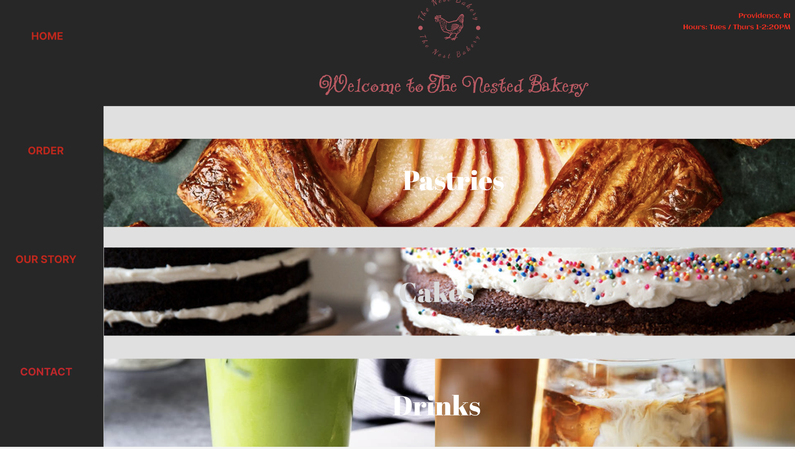
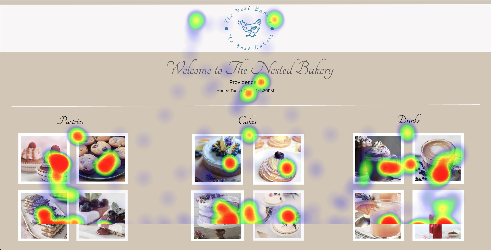
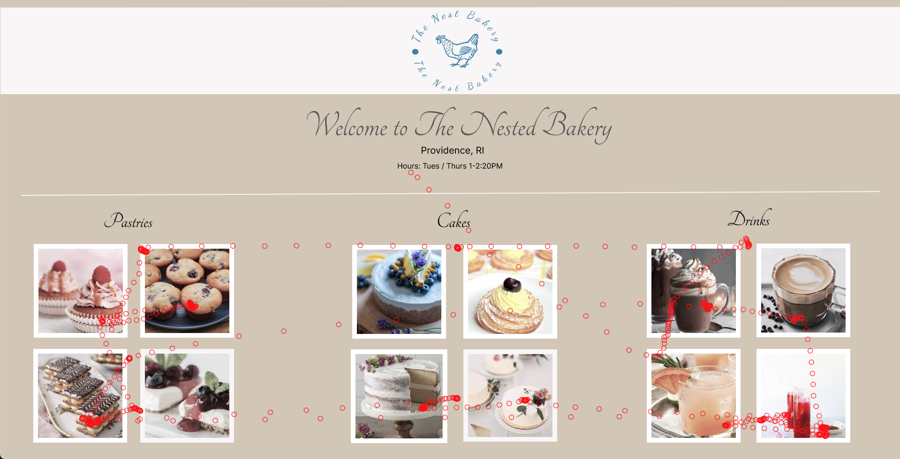
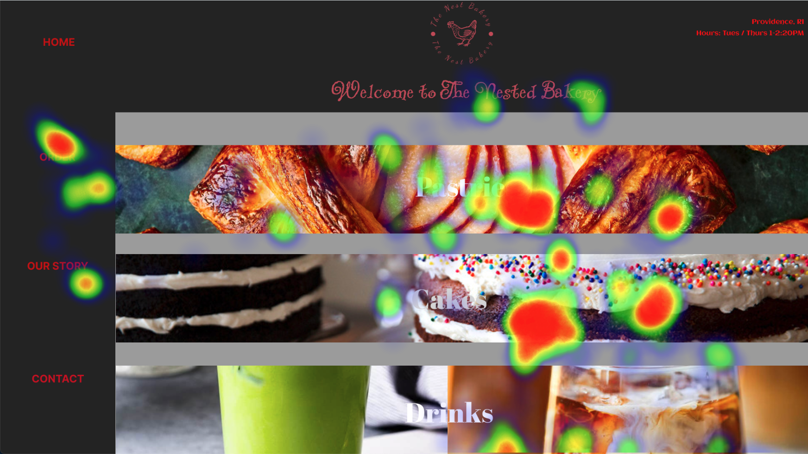
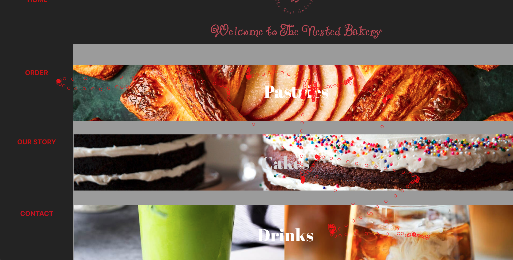

Details
Below are the figma mockups of the redesigned bakery pages


Following the redesign process and setting our hypothese, We invited a 3 test subjects to participate in our experiment. These subjects were hooked up to an eye tracker system and asked to interact with the page for a couple seconds. Below are images of what the results were.




NOTE: In both of the graphs, a large portion of viewers' time were concentrated on the images. This is to be expected as images are the most visually attractive in any interface. However, it's worth noting how much attention viewers gave to the images from version B compared to Version A. Barely much attention was spent on the aspects of the page that would actually enable the user to perform actions such as adding to cart or navigating to another aspect of the page. This works against the intent of a bakery page having a consistent mental model. Usability also declines if too much attention is drawn away from the features of the interface as well. In addition, the effectiveness of conveying important information such as the bakery address is affected. Notice how viewers eyes' glance at the address featured on version A compared to not even a single glance on version B. While this could be attributed to the software not catching all eye activity, I think it's something that should not be completely explained away. A webpage that has too much going on expectedly distracts a user.